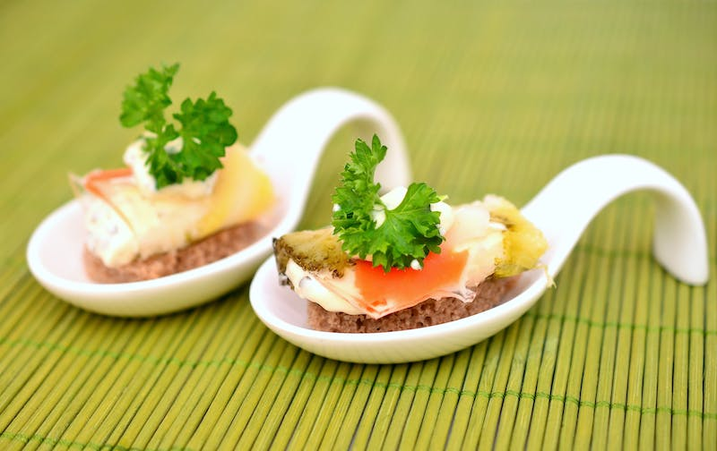
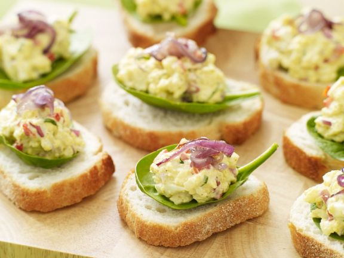

Kruz Recipes
There is a lot of thought and planning that goes into preparing a three course meal and a purpose for each course. Kruz Recipes are recipes updatedly taught by famous chefs globally and mainly describing
how appetizer dishes are prepared.

The appetizer prepares your pallet for the main course.
Or it can be a snack while you wait for dinner. Appetizers break up the meal and give you something to do while the food is prepared. Personally I love the appetizer round of a meal. It’s a small portion so the food can be fun and light with bolder flavors. Appetizers are great for trying new things and testing out foods you wouldn’t ordinarily eat. And they’re cheaper than the main course so making a mistake isn’t a big deal.
Check Out Today's Recipe by a renowned chef (chef Kruzz)

DESCRIPTION
Egg Salad Appetizers are easy with delicious egg salad atop a slice of baguette.
INGREDIENTS
- 4 eggs
- 2 tbsps mayonnaise
- 2 tbsps creme fraiche
- 1 tomato
- 2 red onion
- 1 tbsp freshly chopped basil
- 1 tbsp white vinegar
- peppers
- salt
- 1 tbsp vegetable oil
- 12 leaves baby spinach
STEPS
- Hard boil the eggs and peel. Then halve the eggs, remove the yolks and finely chop the egg whites. Mix the yolks with the mayonnaise and creme fraiche until smooth. Rinse the tomatoes, cut into quarters, remove the seeds and cut into small cubes. Peel the onions, cut one onion into thin strips and cut the second onion into small cubes. Mix the onions with basil, tomato and chopped egg in the egg salad. Season with vinegar, pepper and salt.
- Place the onion strips in a hot pan in oil and sauté for 2-3 minutes until translucent. Remove from the heat.
- Rinse and shake dry the spinach. Place one leaf on a slice of baguette and 1 tablespoon of egg salad on top. Serve with the onion strips as garnish.